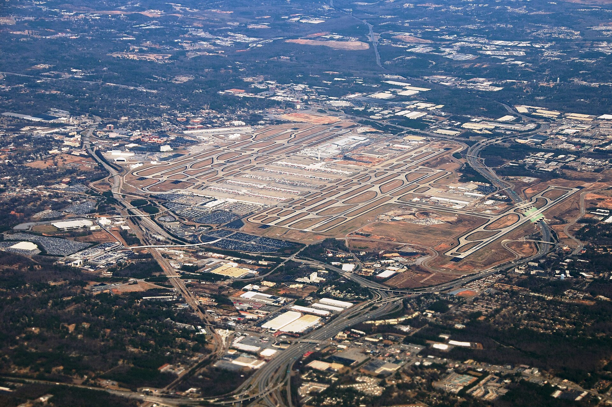
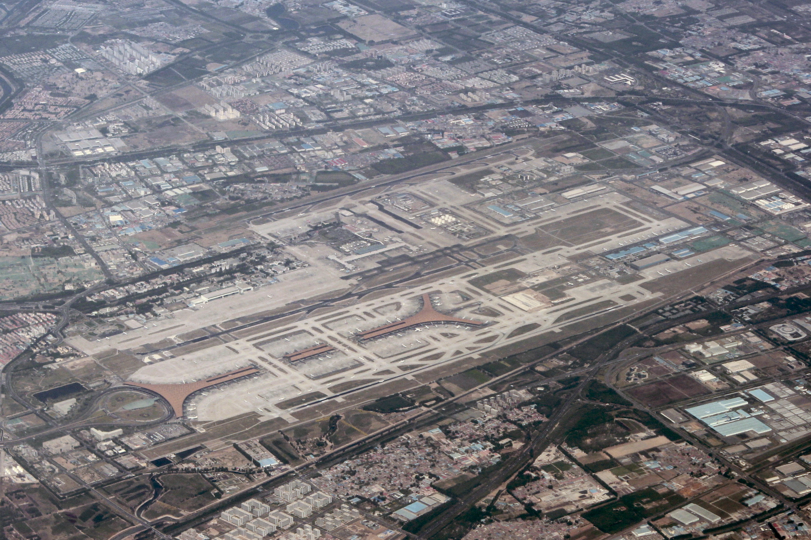
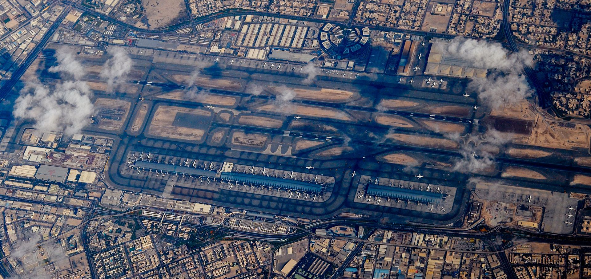
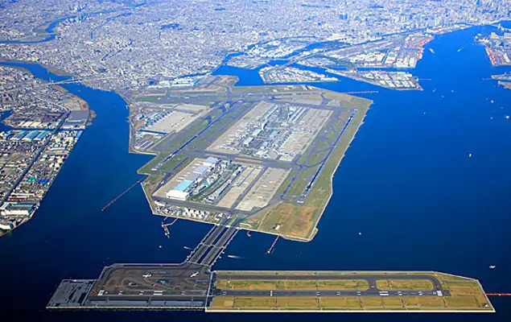
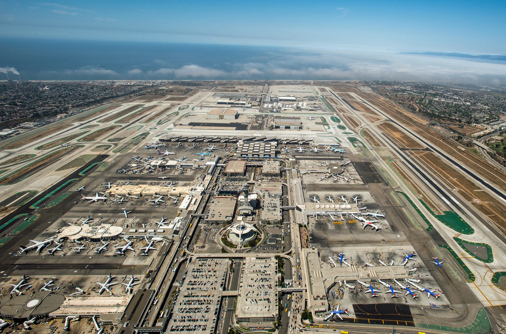

Największe porty lotnicze pod względem liczby pasażerów.

Największe na świecie międzynarodowe lotnisko położone w Atlancie, w stanie Georgia, USA, główny węzeł amerykańskich linii lotniczych Delta Air Lines. Swoją nazwę zawdzięcza dwóm byłym burmistrzom Atlanty, Williamowi Hartsfieldowi i Maynardowi Jacksonowi.
Liczba pasażerów: 103 902 922

międzynarodowy port lotniczy położony 20 km na północny wschód od centrum Pekinu. Jest głównym portem przesiadkowym linii lotniczych Air China.
Liczba pasażerów: 95 786 442

Międzynarodowy port lotniczy położony 5 km na północ od centrum Dubaju, w 2017 trzeci pod względem liczby pasażerów[2] i szósty pod względem ruchu towarowego[3] port lotniczy świata.
Liczba pasażerów: 88 242 099

Port lotniczy położony na wybrzeżu Zatoki Tokijskiej (częściowo na sztucznie utworzonej wyspie) w dzielnicy Ōta, w stolicy Japonii – Tokio. W latach 2002–2007 był na czwartym miejscu na świecie pod względem ruchu pasażerskiego, a w 2008 roku wysunął się na trzecią pozycję.
Liczba pasażerów: 85 408 975

Powszechnie nazywany LAX (każda litera odczytywana oddzielnie) – główny międzynarodowy port lotniczy obsługujący Los Angeles i Obszar metropolitalny Los Angeles.
Liczba pasażerów: 84 557 968